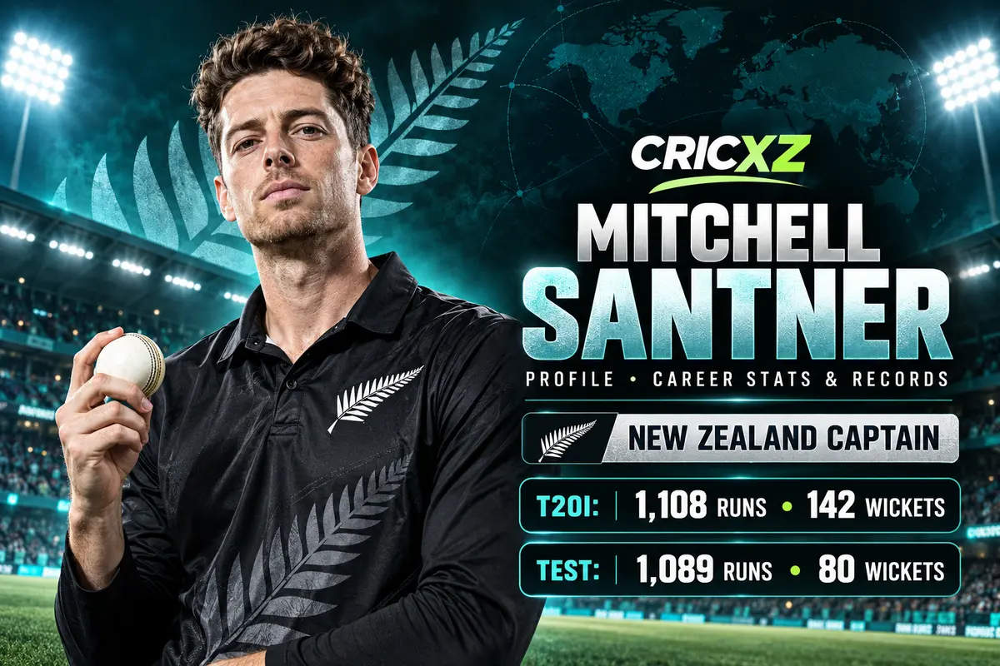

Test Career
- Matches
- 33
- Runs
- 1,089
- Batting average
- 24.75
- Highest score
- 126
- 100s / 50s
- 1 / 4
- Wickets
- 80
- Bowling average
- 33.95
- Best bowling
- 7/53

Mitchell Santner is New Zealand's white-ball captain and one of the country's most reliable modern all-rounders, combining economical slow left-arm orthodox bowling with adaptable lower-order batting.
Career statistics are current through 21 October 2026.
Santner remains active; figures will change after future appearances.
Across 300 international matches, Santner has taken 361 wickets and scored 3,845 runs. His control, tactical awareness and ability to contribute in pressure situations have made him central to New Zealand's white-ball teams.
Santner was appointed New Zealand's full-time ODI and T20I captain in December 2024. He subsequently led the side to major finals and notable white-ball series victories, establishing a calm, analytical leadership style.
He captains New Zealand in the five-match T20I series against India beginning in Christchurch on 22 October 2026.
27 November 2015
Against Australia at Adelaide.
9 June 2015
Against England at Birmingham.
23 June 2015
Against England at Manchester.
Ran through India in Nagpur during the 2016 tournament.
His finest innings analysis in Test cricket.
Finished as New Zealand's leading wicket-taker in the tournament.
Led New Zealand to the final while spearheading the spin attack.
Captained New Zealand to another global white-ball final.
Combined Test, ODI and T20I wickets in this snapshot.